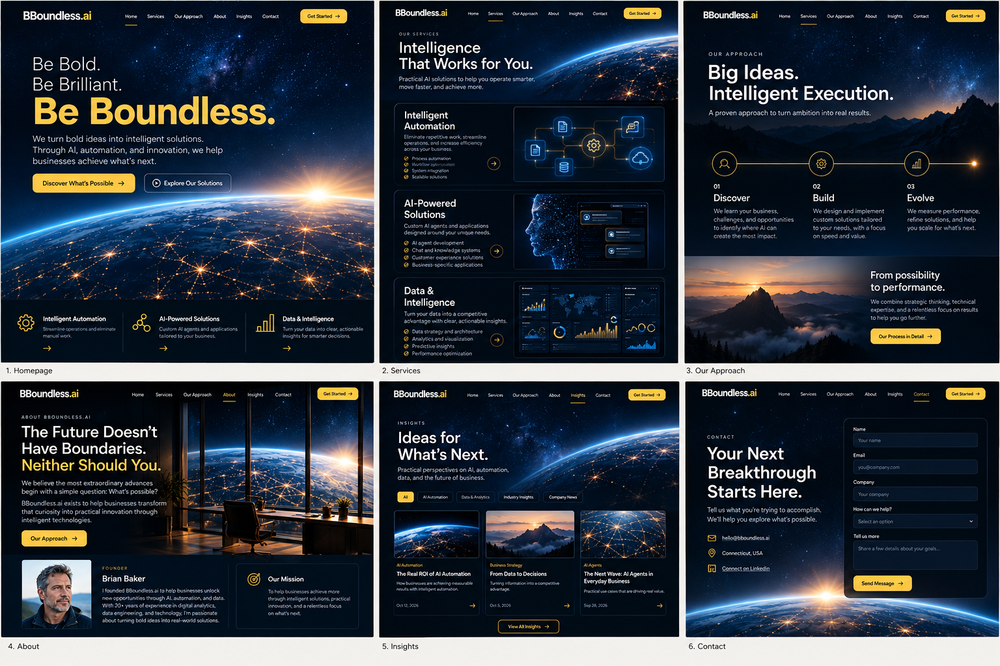

Be Bold.
Be Brilliant.
Be Boundless.
Explore the original BBoundless.ai design concepts. Select a design to review the actual mockup artwork, not an approximation of it. These are design previews rather than fully built web pages.
The original design image is being prepared for publication.

Full six-page website concept
View original full-resolution artwork ↗Home, Services, Our Approach, About, Insights, and Contact
We'd value your feedback
Which visual direction feels most credible and memorable? Is the message clear? Which details should be refined before launch?
Share your comments directly with the person who sent you this preview.